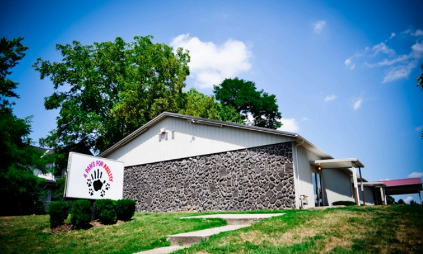
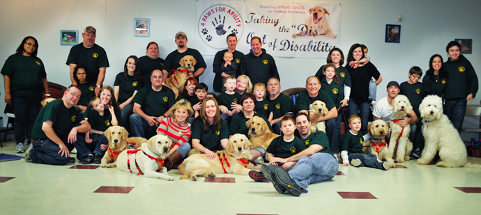

4 Paws was founded in 1998 by Karen Shirk. Karen needed to use a ventilator to breathe and most of the agencies she applied to found her “too disabled” to receive a service dog. Finally after obtaining her own dog and finding the training for it herself, Karen started to think about a place where people could apply for service dogs without being judged based on the severity of their disability. This thought turned into the idea to start her own organization. In the beginning, Karen used to hire contracted trainers to do the service dog work. However, after a few years, it became clear that no one was training service dogs with public access for children. Because of this, Karen began to let people know that she would help regardless of age. It was after this change that 4 Paws started gaining mass amounts of business, as much as a 300% increase in a year’s time. The first dogs offered to children were Mobility Assistance Dogs and Autism Assistance Dogs. 4 Paws was one of the first organizations to train dogs that were specifically referred to as an “Autism Assistance Dog” which had a set of skills designed to aid the family. These dogs had features that provided behavioral interventions to help the children with their daily interactions with others.
Several years after starting 4 Paws, their first facility was purchased in Xenia, Ohio. Management believed that this facility would meet their needs for many years, however within one year they outgrew the facility and had to start renting space outside the facility for training classes. 4 Paws started training Hearing Ear Dogs and Multipurpose Assistance Dogs as well. In 2006, 4 Paws started noticing some of their dogs were alerting seizures before any visible signs were noticed. Because of this, 4 Paws developed a means to train dogs to alert to a seizure before there are any outward signs visible. They now have a 90% success rate in the placement of service dogs to alert seizures. To aid the expansion, 4 Paws purchased a 6,000 square foot building with 2 acres of land behind it. This facility continues to be the headquarters of 4 Paws today.
By placing approximately 100 dogs per year, 4 Paws is the largest organization to place service dogs with children and one of the only organizations to have no minimum age requirements. The Multipurpose Assistance Dog is used for children who have a disability that fits into more than one type of trained dog. In 2011, 4 Paws began placing Veterans Assistance Dogs.
